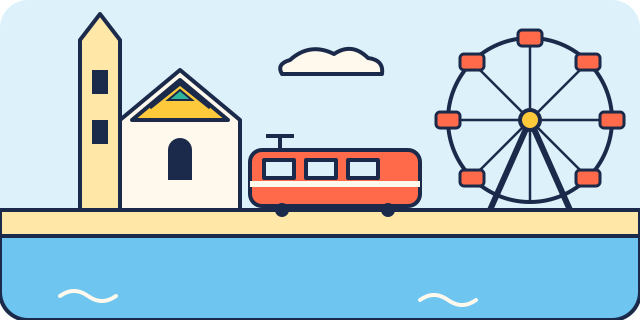

Vienne pour les enfants
Le pays, la capitale, la langue, les premiers mots et ce qu'il faut savoir avant de partir, en phrases simples. Ces pages sont aussi dans le carnet PDF.


Découvre Vienne
Le savais-tu ?
- Le zoo de Schönbrunn a ouvert en 1752 : c'est le plus vieux zoo du monde encore ouvert.
- La grande roue du Prater tourne depuis 1897. Ses cabines ressemblent à de petits wagons rouges.
- Vienne est la ville de la musique : Mozart y a vécu et composé beaucoup de ses œuvres.
- La Sachertorte, un gâteau au chocolat et à la confiture d'abricot, a été inventée à Vienne.
- Le Danube, l'un des plus longs fleuves d'Europe, traverse la ville.
- Le toit de la cathédrale Saint-Étienne est fait de plus de 230 000 tuiles de couleur qui dessinent des motifs.

Mes premiers mots en allemand
Lis le mot en gras à voix haute, comme il est écrit entre guillemets, ou touche le haut-parleur pour l'écouter. Essaie de le dire à quelqu'un pendant le voyage !
Prêt pour Vienne ?
Cinq questions pour devenir un vrai explorateur. Entoure ta réponse, ou touche-la sur l'écran.
1. Quel est le plus vieux zoo du monde encore ouvert ?
Il a ouvert en 1752, à Vienne.
2. Quel manège géant tourne au Prater depuis 1897 ?
La grande roue, avec ses cabines rouges.
3. Quel grand musicien a vécu à Vienne ?
Mozart y a composé beaucoup de ses œuvres.
4. La Sachertorte est un gâteau au…
Chocolat, avec une couche de confiture d'abricot.
5. Comment dit-on « merci » en allemand ?
Ça se prononce « dann-ke ».
Réponses : 1. a · 2. c · 3. b · 4. a · 5. c